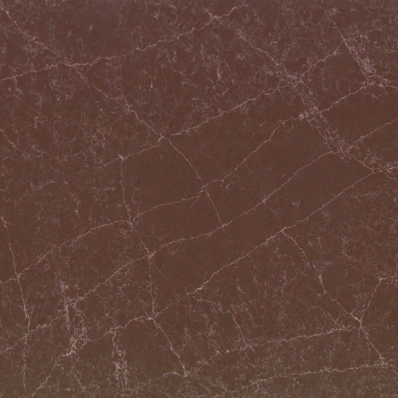
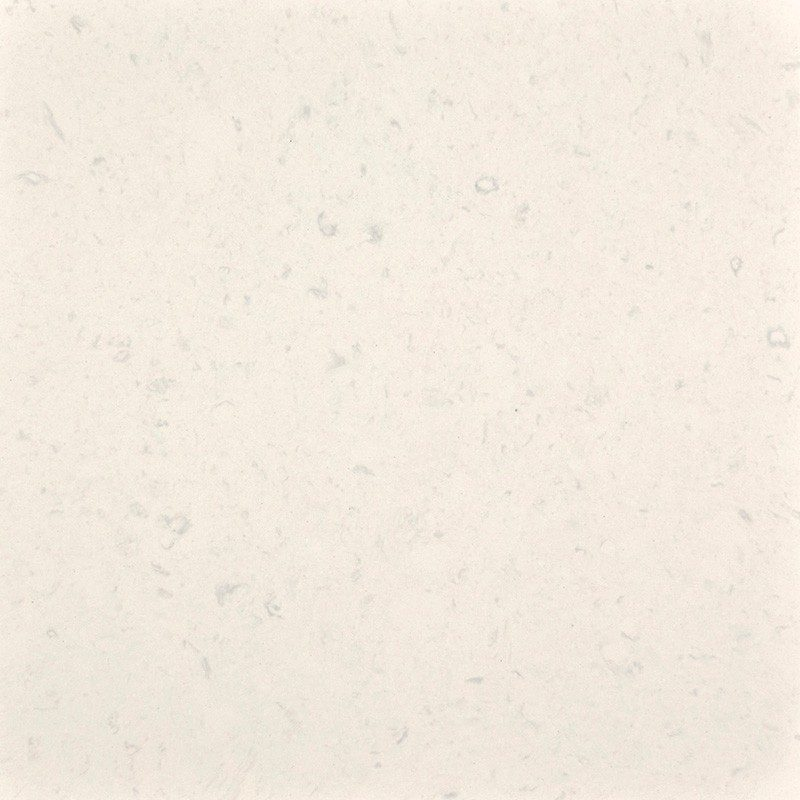
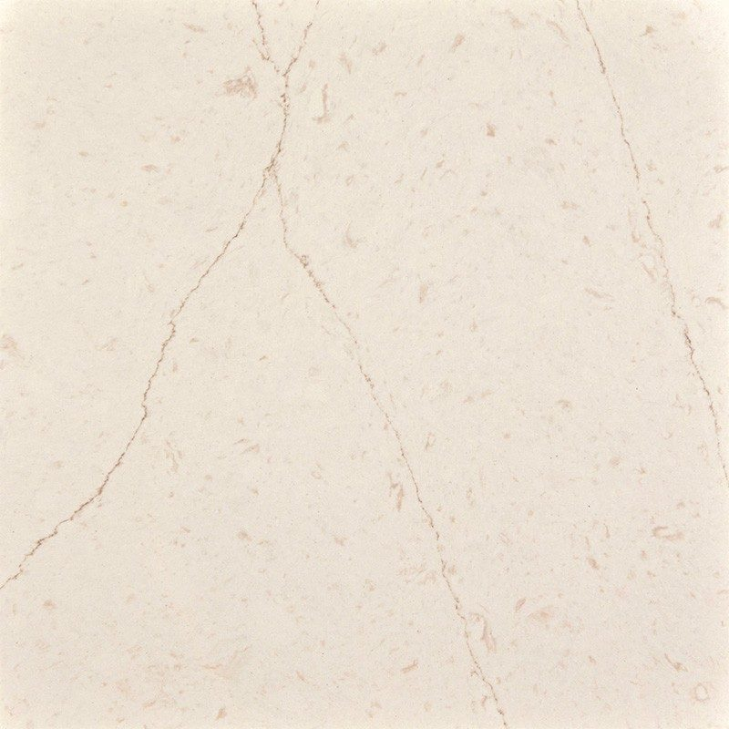
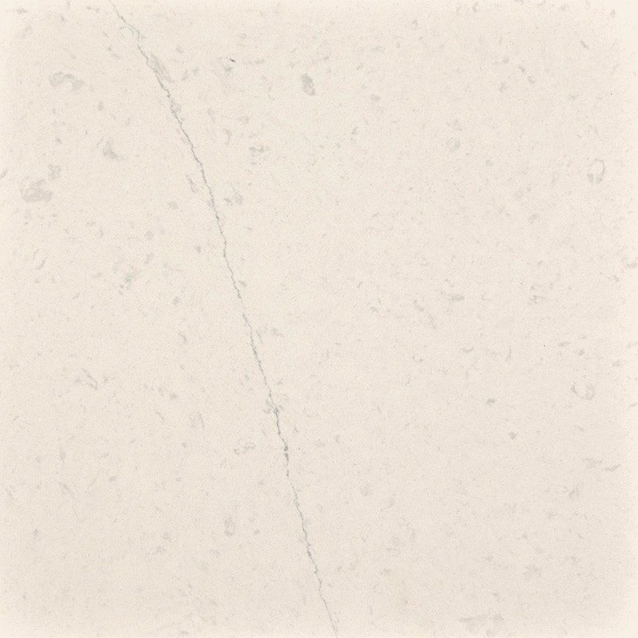

MStone Surfaces
Minéralis, the responsible alternative to quartz for your worktop
Minéralis worktops deliver the look of a premium quartz with a very different make-up: a large share of recycled glass and very little silica. It is the new material we are championing this year, shaped in our Mafra workshop and backed by a 20-year warranty.
Worktops in Minéralis
The composite mineral surface that replaces quartz. Every slab contains 85% first-production recycled glass — recovered during its original manufacture, never post-consumer glass — with a low silica content, designed with the people who cut and fit it in mind. We craft it to measure in our Mafra workshop.
Minéralis — certified composition
- 85% first-production recycled glass
- Low silica content
- Heat resistant to 180 °C
- 20-year warranty
- ISO 14021, REACH compliant, SVHC-free
- 19 colours
- Recycled glass
- 85%
- Heat resistance
- 180 °C
- Warranty
- 20 years
- Safer to work with
- Low silica
Finishes and formats
- 19 colours
- Slabs 3,200 × 1,600 mm
- ISO 14021 · REACH
Minéralis colours — a selection
16 colours available, which you can also see in person at our Mafra factory by appointment.
 Calacatta TajSand veiningA white ground with sand-toned veining: the spirit of calacatta in a warmer hue.
Calacatta TajSand veiningA white ground with sand-toned veining: the spirit of calacatta in a warmer hue. Calacatta Attera GoldGolden veinsCalacatta with golden veining, ideal for a worktop with a matching splashback.
Calacatta Attera GoldGolden veinsCalacatta with golden veining, ideal for a worktop with a matching splashback. FiorellaMinéralis colourA luminous Minéralis colour for kitchens and bathrooms.
FiorellaMinéralis colourA luminous Minéralis colour for kitchens and bathrooms. Carrara AmberaAmber-grey veiningA bright white ground crossed by soft grey veining with amber hints, in the spirit of Carrara marble.
Carrara AmberaAmber-grey veiningA bright white ground crossed by soft grey veining with amber hints, in the spirit of Carrara marble. White ArabesqueFine arabesquesWarm white traced with fine grey arabesques: movement without overpowering the room.
White ArabesqueFine arabesquesWarm white traced with fine grey arabesques: movement without overpowering the room.- Calacatta Attera CendreAsh-grey veinsBroad, contrasting ash-grey veins on a white ground: a cool mineral tone.
 Calacatta ViolaViolet veiningCalacatta with violet-tinged veining, for a worktop full of character.
Calacatta ViolaViolet veiningCalacatta with violet-tinged veining, for a worktop full of character. Nobel WhiteWhiteAn understated, luminous Minéralis white.
Nobel WhiteWhiteAn understated, luminous Minéralis white. AdoraMinéralis colourMinéralis colour — see the full specification at MStone Surfaces.
AdoraMinéralis colourMinéralis colour — see the full specification at MStone Surfaces. Calista BeigeBeigeA warm mineral beige.
Calista BeigeBeigeA warm mineral beige. TravertinoTravertine effectThe look of travertine, without the upkeep.
TravertinoTravertine effectThe look of travertine, without the upkeep. Cream CanyonCreamA cream colour, particularly suited to double vanity tops.
Cream CanyonCreamA cream colour, particularly suited to double vanity tops.
CapellaMatt · PolishedDeep wine-red base with a fine network of pale, pinkish veins.
Celeste WhiteMatt · PolishedBright, soft white, almost plain, with very faint nuances.
Stella BrownMatt · PolishedCream-white base with fine light-brown veins and rosy-beige patches.
Stella WhiteMatt · PolishedWhite base with fine, diffuse light-grey veins.
Inspiration
Minéralis slabCalacatta Taj Minéralis settingFiorella SampleCalacatta Attera Gold
Why choose Minéralis for your worktop
Minéralis answers a question many of our clients ask: can you have the beauty and practicality of quartz with a more reasonable footprint? The glass comes from first production and never from bottles or consumer items, which keeps the material consistent.
Day to day, Minéralis behaves like a demanding kitchen surface: good resistance to scratches, stains and heat up to 180 °C, with some of the simplest upkeep in our range. Its low silica content also protects the people who cut and fit it, our own teams included.
Its composition is declared under ISO 14021 and it complies with REACH, with no SVHC substances. The manufacturer's warranty runs to 20 years.
Choosing your Minéralis colour
The Minéralis palette favours bright marble effects, much in demand for open-plan kitchens. Calacatta Attera Gold, with its golden veining, works well on an island paired with a matching splashback. Calacatta Taj plays the same card in a warmer version, with sand-toned veins that sit nicely alongside pale wood.
For a quieter look, White Arabesque adds movement without dominating the room, and Carrara Ambera recalls Carrara marble with an amber touch. If you prefer a softer mineral feel, Travertino captures the spirit of travertine without its pores.
Slabs measure 3,200 × 1,600 mm, which keeps joins to a minimum in most kitchens. Ask us for samples so you can judge the colours in the light of your own room.
Your questions
Why does the low silica content of Minéralis matter?
Cutting and polishing surfaces rich in crystalline silica produces dust that professionals have to control carefully. Minéralis was designed with a low silica content, with the people who cut and fit the material in mind. For you at home, it makes no difference in use: it is above all a more responsible choice towards the craftspeople who make your worktop.
Can I put a hot pan on a Minéralis worktop?
Minéralis withstands heat up to 180 °C, which covers most everyday situations. A pan taken straight off a high flame or a scorching cast-iron dish can, however, exceed that temperature. As a precaution, we recommend a trivet for anything coming off the hob or out of the oven: your worktop will keep its looks throughout its warranty period.
See also
Let's talk about your project
An expert reviews your request and replies within 48 working hours with a tailored proposal.